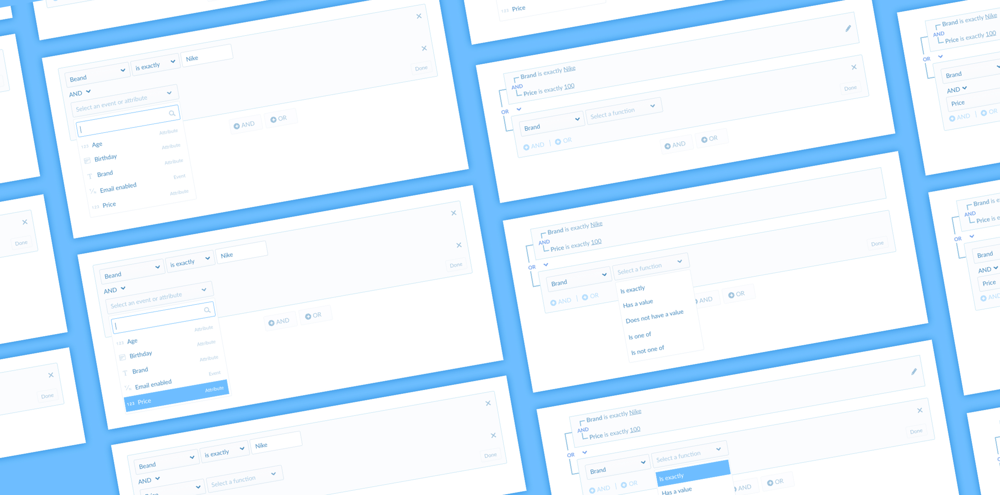
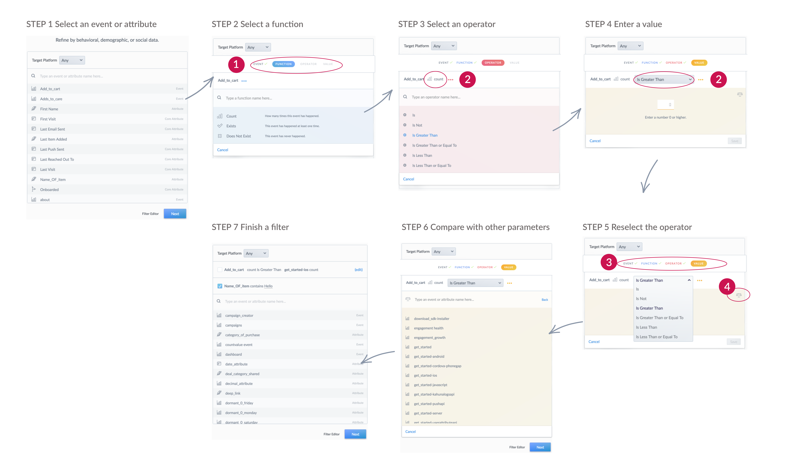
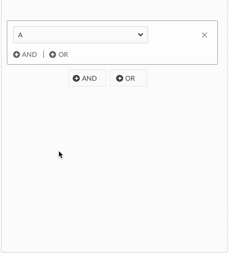
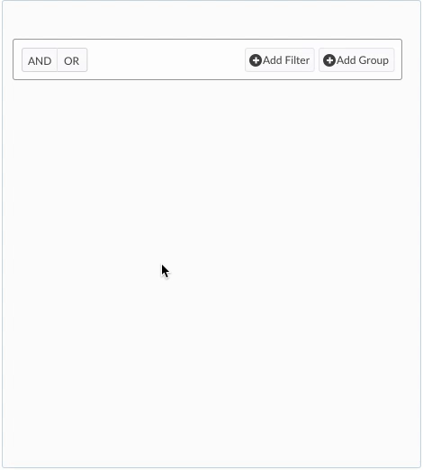
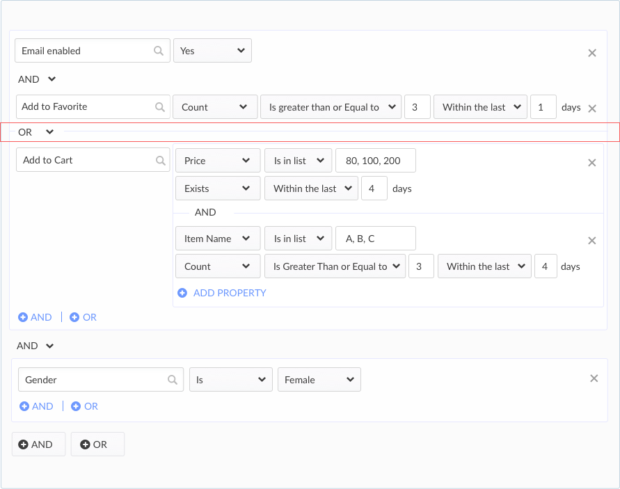
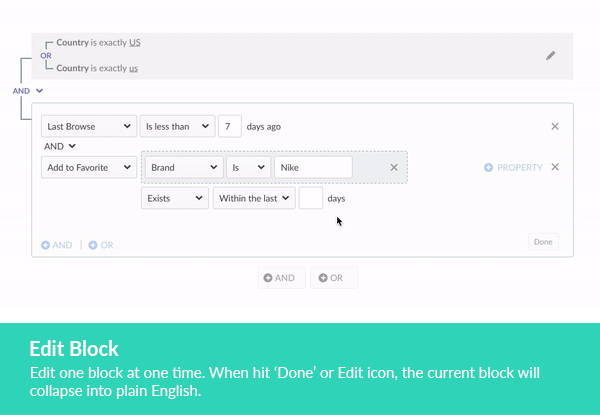
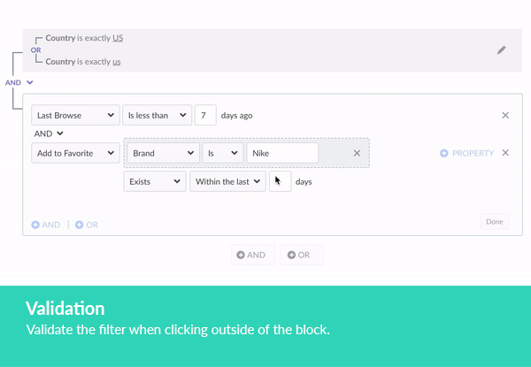
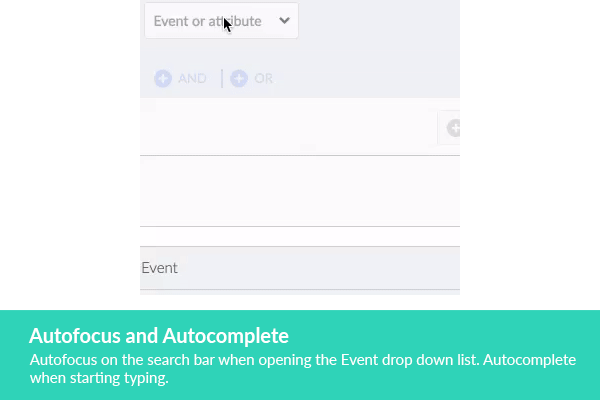

Feature Redesign: Filter Editor
My Role
Product Design, Interaction Design
Company
Kahuna
Timeline
Sep. 2017 to Oct. 2017
Background
When the marketers create a campaign, they need to define a group of people to send out the message. This group of people can be defined by demographic, by their behavior on the products, or a mix of both from the filter editor.
My goal in this project was to rethink about the workflow and the interaction of the filter editor in the campaign creation.
Identify the problem
In our original design, if the users create more than two criteria, we only support AND logic, which means we will send out the campaign to the people who fulfill both criteria A and B. If the users want to use OR or more complex logic, they need to go to filter editor to write the logic directly. But most of the marketers didn’t familiar with SQL script.
Without the flexibility to create more complex criteria, it’s hard for marketers to target the right group of people. As a result, the campaign could not speak to the right people and turn out to low engagement rate and even lose their customers.
Research
Current workflow
The current filter tool has been released for a while. We collected customer feedbacks through feature requests and bug tickets. We also took a deeper look at the current design, here were the issues kept popping up.
{kind=link}

Current Filter Workflow
Learning from the competitors
We’ve also analyzed our competitors’ filter tools. Here is a quick run-down of what our compitors do.
Appboy

Appboy segment
- Pros: Intuitive UI and clear structure. Can drag and drop to reorder the block. Estimate the number of the users fulfill the criteria.
- Cons: Support AND and OR logic, but use OR only inside of a block; use AND outside of the block.
Leanplum

Leanplum segment
- Pros: Allows multiple value for one attribute. Form as a sentence.
- Cons: Visual hierarchy is not clear. It’s not clear to see which value is editable.
Observation
Is (A and B) or (C and D) or A and (B or C) and D? The result is different!
When you have both AND and OR logic in one filter, what is the right way to group it? Based on how you group them, the result will be different!
The interesting thing was when we deep dived into the most frequent use cases with the CS team and in-house marketers, we found that there is a very common use case that can not be served from most of the platforms.
One of the example is (Favorite Brand is Nike and Price is lower than 50) or (Favorite Brand is Adidas and Price is lower than 60).
After disucssed with the team, we decided to include it in this implementation.
Ideation
After the research and understanding the problem we wanted to solve, the ideas were now flowing. As we moved, our ideas became sketches and the winning sketches started to break through to solution we set out to solve. I've quickly created prototypes for different ideas and did an internal validation with pm and marketers.
As a result, the #1 solution got more positive feedbacks. The reasons was:
- #1 solution was more intuitive. One block meant one group. It was also easy to understand that you can add AND and OR logic for both side.
- #2 was too complicated. There were so many options at beginning. The users just got stuck and don't know how to do.
{kind=link}

Solution 1
{kind=link}

Solution 2
After we got some idea about our direction, the next coming up question was what if the filter got super complex? Was it still easy to understand?
When we had multiple layers, it became really hard to read. Besides, the horizontal line was hard to see that there was a divider that separate the third criteria.
{kind=link}

Open all columns
To fixed this, we did several rounds of tests and iterations. The final solution was that we added a done button inside of the block. So, when the users completed a set of filters and hit done, then we collapsed it as plain english and used lines to draw the relationship between each criteria.
{kind=link}
{kind=link}
{kind=link}
{kind=link}
Final Deisgn
Through the quick tests and validations, we finally came to our final design. From implementation side, I paired with a front-end engineer to provide the interaction guidance and support.
High-Fidelity Prototype
Redesign highlights
The following images illustrate some of the micro interactions of the design that we found most impactful for the user.



Result
An Increase in Sales Prospects
After the redesign, I got a very positive feedbacks from our sales team. The potential customers show a lot of interests and went through our sale funnel.